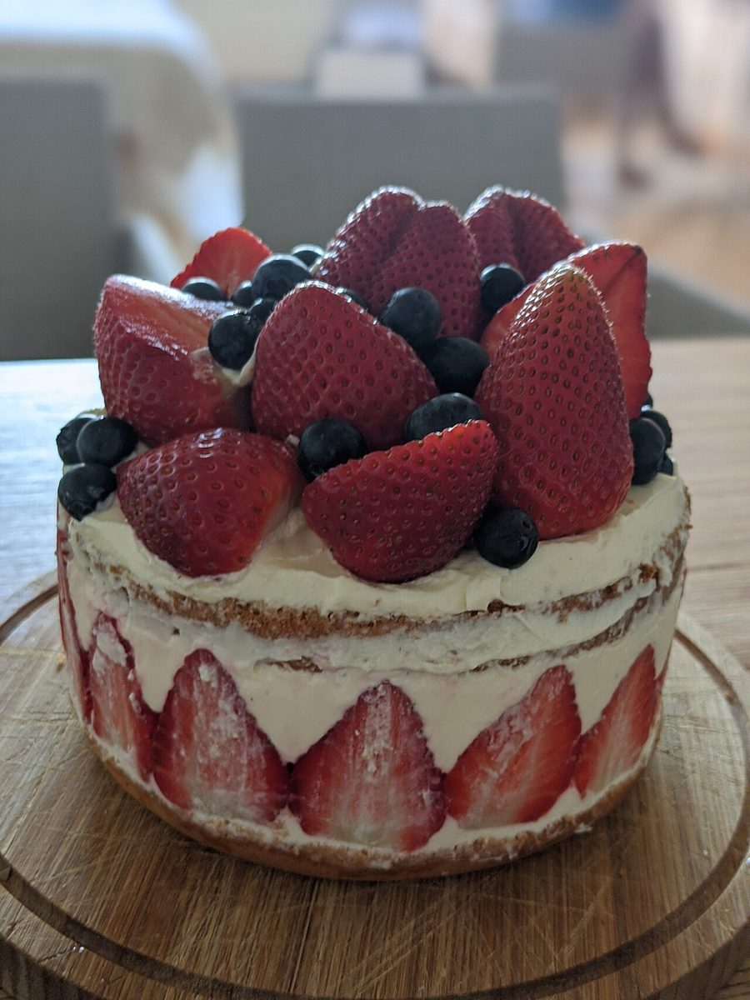
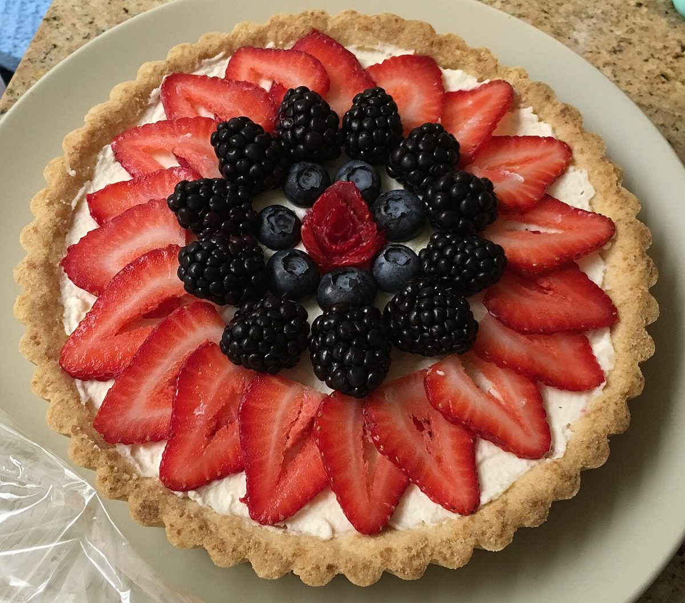
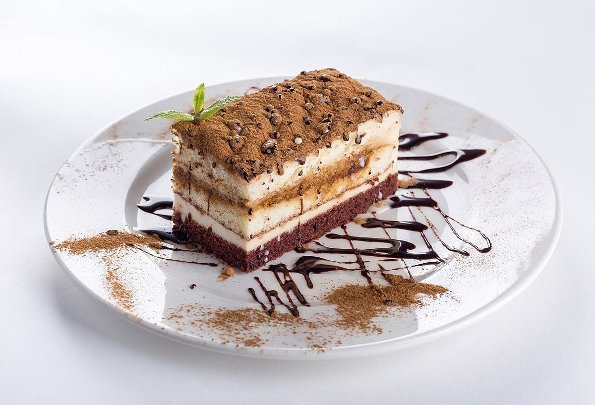
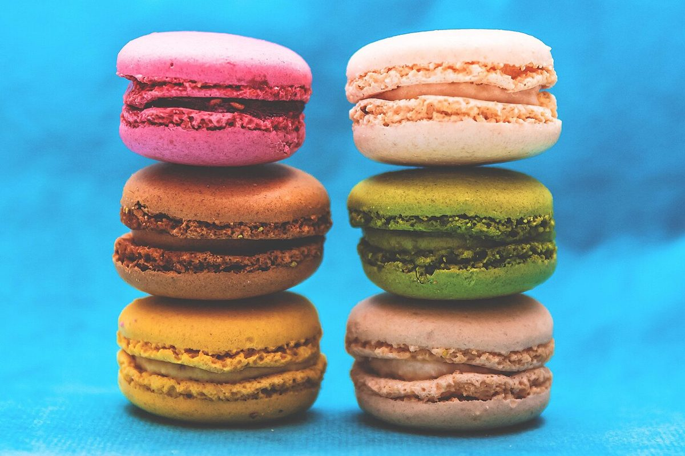
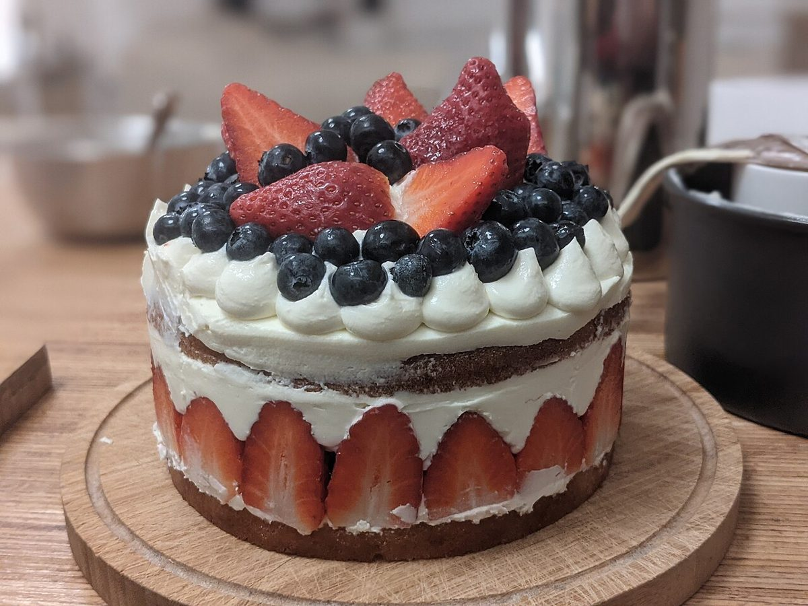
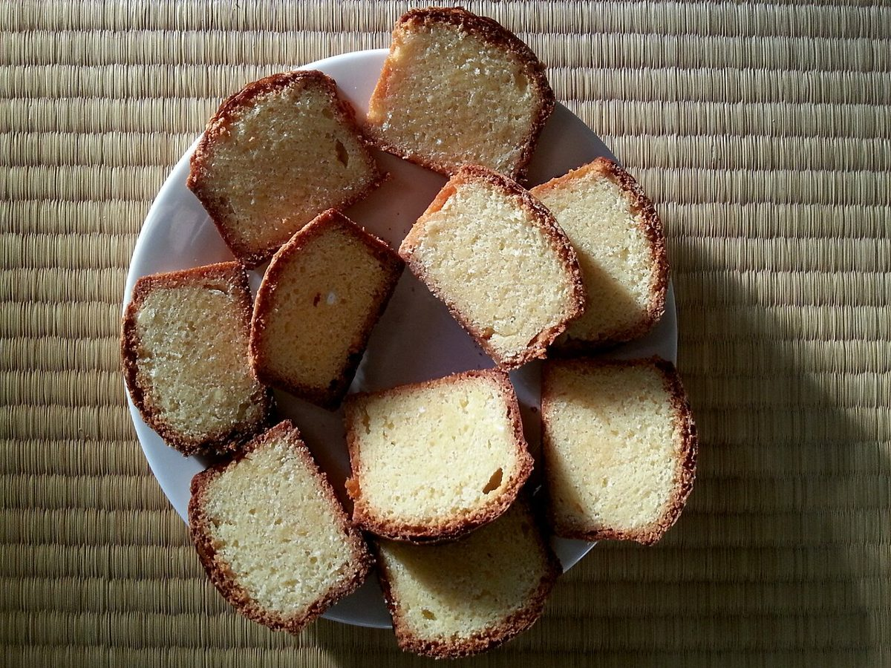

Kisarazu, Chiba
GATEAUMIFUNEYAMA
木更津市文京の「MIFUNEYAMA GATEAU」。ひと切れの断面のように、いくつもの時間が重なるサイトを、制作側の案としてかたちにしました。

Concept
制作側のコンセプト案「かさなる、ひと切れ」
お店の名前の由来や扱う品物は、現時点では確認できていません。そのためこのページは、制作側の案として「断面の層」をモチーフにしました。ページ上部の細い縞は、層になった生地とクリームをイメージした飾りです。
- 01
- 02
- 03
Image
写真のイメージ
下の写真はすべてフリー素材です。実際の写真はお店ご提供のものに差し替えます。





Contact
気になったら、まずはお電話かInstagramへ
営業時間・お品書き・ご予約などは準備中です。最新の情報はお電話またはInstagramでご確認ください。